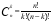
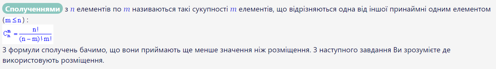
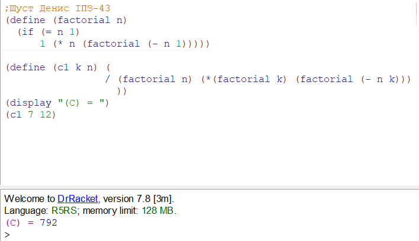
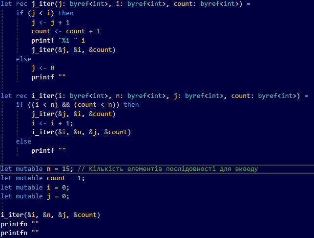
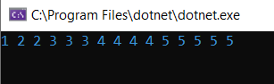
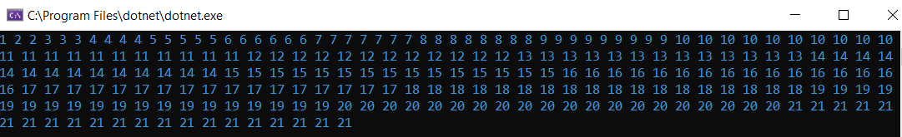

|
МІНІСТЕРСТВО ОСВІТИ І НАУКИ УКРАЇНИ
КИЇВСЬКИЙ НАЦІОНАЛЬНИЙ УНІВЕРСИТЕТ ІМЕНІ ТАРАСА ШЕВЧЕНКА ФАКУЛЬТЕТ ІНФОРМАЦІЙНИХ ТЕХНОЛОГІЙ Кафедра програмних систем і технологій
Лабораторна робота №1 Використання рекурсії для організації повторювальних процесівз дисципліни «Функціональне програмування»
|
|||
|
Виконав: |
Шуст Денис Олександрович |
Оцінка |
|
|
Група |
ІПЗ-43 |
в балах |
за національною шкалою |
|
Форма навчання |
денна |
|
|
|
Спеціальність |
121 |
||
|
Дата перевірки |
|
||
|
2020 |
|||
Мета
Сформувати декларативне мислення в галузі програмування завдяки використанню чистих функцій, рекурсій замість циклів, запобіганню даних, що змінюються. Опанувати застосування рекурсивних функцій для обчислювальних процесів.
Завдання 1
Завдання1.1. У речовій лотереї розігруються m предметів. Усього в урні n квитків. Виймається k квитків. Значення m, n, k вводять з клавіатури. Скількома способами квитки можна вийняти з урни так, щоб: а) рівно два з них були виграшними, б) принаймні два з них були виграшними? Кількість способів вибору квитків визначається формулою сполучень , комбінаторними правилами суми та добутку. Реалізувати рекурсивний варіант розв'язку задач. Визначивши глибину рекурсії.
Хід роботи

Для вирішення завдання було створено функцію factorial, яка є допоміжною для функції c1. Саме в c1 реалізована основна логіка програми.
Код програми та результати

Для k = 7, n = 12, маємо : C = 792
Завдання 2
Завдання1.2. Монотонною послідовністю називається послідовність натуральних чисел, в якій кожне натуральне число k зустрічається рівно k раз: 1, 2, 2, 3, 3, 3, 4, 4, 4, 4 ... Ввести з клавіатури натуральне число n. Використовуючи рекурсію, вивести перші n членів цієї послідовності. Контрольний тест: введено число 15, отриманий результат: 1 2 2 3 3 3 4 4 4 4 5 5 5 5 5.
Хід роботи
Для вирішення завдання було розроблено програму на F#. Програма розроблювалася та компілювалася у середовищі Visual Studio

Результати
Для n = 15, маємо :

Для n = 222, маємо : 
Висновки:
Отже, в результаті виконання лабораторної роботи було отримано навички роботи в парадигмі функціонального програмування. Було розроблено дві програми, що моделювали найпростіші математичні функції. Було протестовано роботу програми на коректність, вона працює коректно.